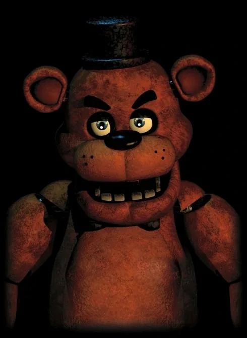
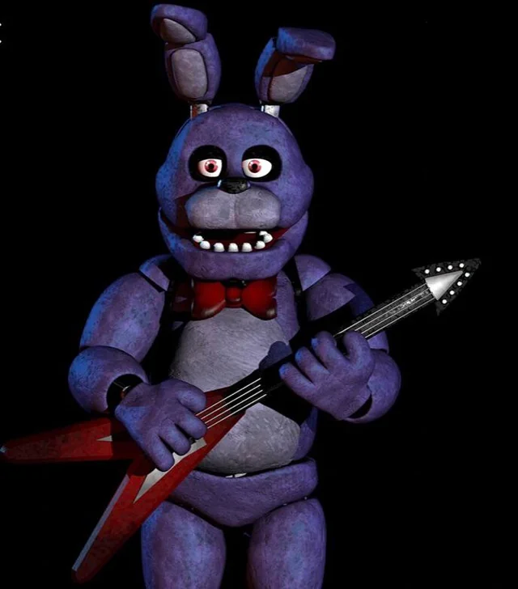
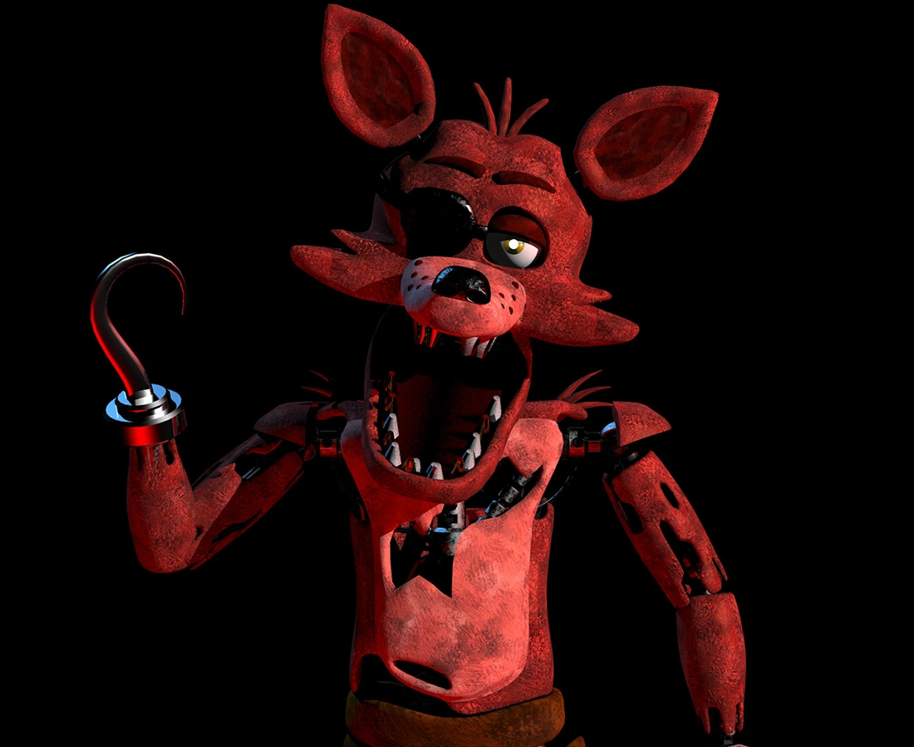

FREDDY
El líder de la banda. Un oso animatrónico que canta en el escenario principal. No olvides revisar la camara 4.

BONNIE
El conejo guitarrista. Siempre aparece en tu puerta izquierda.

CHICA
Chica siempre estara en tu puerta izquierda

FOXY
El zorro pirata. Corre por los pasillos de la pizzería, cierra la puerta rapido